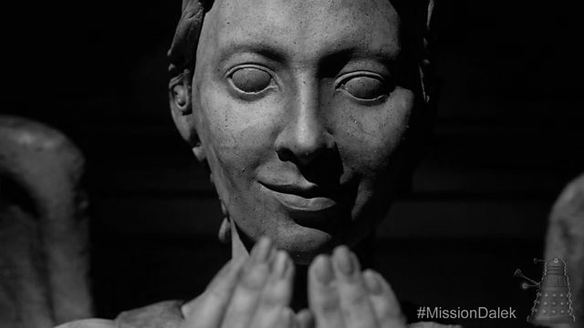
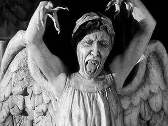
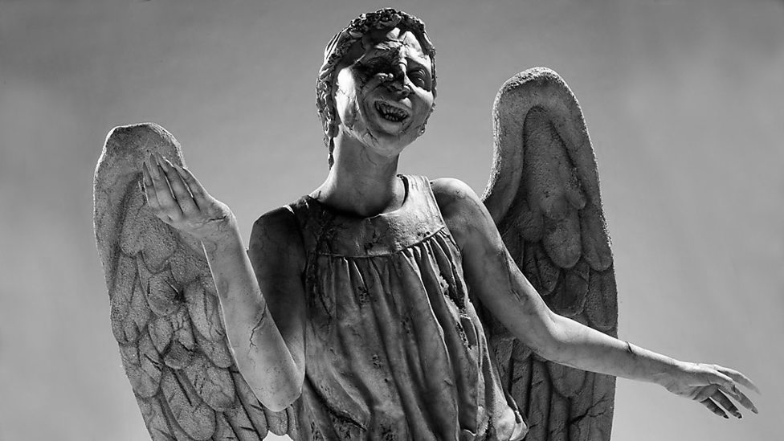

우는 천사는 영국 드라마 <닥터 후> 시리즈에 나오는 외계 종족이다. <닥터 후>는 타임로드라는 종족에 속하는 외계인 닥터가 그의 동료들과 함께 시공간을 누비며 지구와 인류, 우주를 구하는 이야기인 SF 드라마다. 드라마에서는 다양한 시대와 공간, 외계 생명체 등이 등장하게 되는데 여기서 우는 천사도 등장을 한다. 겉보기에 그들은 단지 아름다운 천사 조각상으로 보일 뿐이다. 우리가 그들을 바라보고 있을 때, 그들은 항상 눈을 가리고 처연하게 우는 것처럼 가만히 서 있는다. 그들에게 어떤 사연이 있길래 그렇게 눈을 가리면서까지 펑펑 우는 것일까. 이들이 가진 비밀은 무엇일까?
사실 그들은 엄청난 암살자들이다. 살아있는 생물에게 관찰될 땐 몸이 석상 그 자체가 되어 방어하지만 누구에게도 관찰되지 않을 땐 사냥감을 향해 돌진한다. 스피드는 또 엄청 빨라 눈을 깜박이는 그 짧은 순간에 깜박 깜박 다가오며 전등을 원격으로 깜박거리게 하고 그 꺼지는 사이에도 이동할 수 있다.
그들은 우주에서 긴 시간동안 생존해 왔는데 그럴 수 있었던 이유는 그들이 갖고 있는 완벽한 방어 체계 때문이다. 그건 바로 누구도 자신을 보지 않을 때에만 움직일 수 있으며 생명체에게 인식되면 그 즉시 돌로 변해 그 자리에 그대로 멈춰 서버리는 능력으로, 무생물인 돌은 죽일 수가 없기 때문에 그토록 오랫동안 살아남을 수 있었던 것이다. 그래서 우는 천사와 우는 천사가 ‘서로를 쳐다보면’ 영원히 굳어버리기 때문에 눈을 가리고 있다. 그 모습이 우는 것과 비슷하다고 생겨서 이름이 우는 천사가 된 것이다. 서로를 영원히 쳐다볼 수 없으니 별명은 ‘외로운 암살자(Lonely Assassin)’다. 사냥할 마음이 없을 땐 아무에게도 관찰되지 않아도 그냥 눈 가리고 가만히 있는다. 그냥 배고플 때만 사냥하지 무작정 이유 없이 사냥하진 않는다.
그렇다면 그들이 사냥한다는 것은 무엇일까? 특이하게도 살아있는 생명체의 시간 에너지를 먹고 사는데 그렇게 시간 에너지가 흡수당한 피해자는 과거로 가게된다. 하지만 경우에 따라 엄청 굶었을시 사람의 목을 꺾어 죽여 시간 에너지를 흡수하기도 한다
우는 천사는 종족 번식 방법이 특이한데, 주변에 우는 천사가 존재할 시 천사라는 이미지를 가지고 있는 것들을 우는 천사화시킬 수 있다. 따라서 일반 천사 동상도 우는 천사가 될 수 있고 심지어 TV 화면 같은 물리적인 실체가 없는 것도 우는 천사화돼서 현실로 나타난다.
이들은 인간수준의 지성은 지니고 있고 특정 수단을 쓰면 대화까지 가능할 정도로 상당히 고등한 정신을 지닌 종족으로 알려져 있는데 거기까지 일 뿐. 다른 생물들은 사냥감 이하로 밖에 안보며 심지어 사냥 자체에 재미를 부여하는 천부적인 사냥꾼들이다. 한마디로 어떤 희생을 치르든 시간 에너지를 섭취하는 것만이 생존 목적인 공존 불가능한 전투종족이라는 것이다.
우는 천사는 우주만큼이나 나이가 많지만, 그들이 어디에서 왔는지는 아무도 모른다. 그들은 가장 치명적이고 가장 강력하고 가장 악의적인 생명체의 진화가 만들어 낸 것이다. 우주에서 당신을 멋지게 죽일 수있는 유일한 싸이코패스다. 만약 당신이 우는 천사를 마주친다면 절대 눈 감지 말고, 뒤를 돌아봐서도 안되고, 눈을 돌리거나 깜빡여서도 안된다. 행운을 빈다.